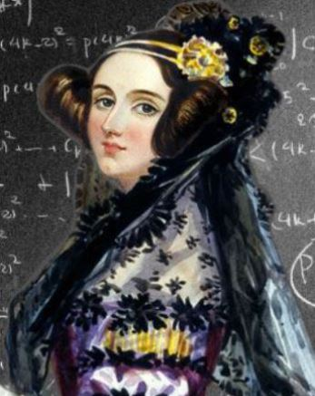

Frauen In Der Wissenschaft
Die Informationstechnologie und Technik ist reich an bahnbrechenden Innovationen und Entdeckungen.
Viele dieser Errungenschaften gehen auf Frauen zurück, deren Beiträge oft übersehen werden.
Diese Frauen prägten IT und Technik, erhielten aber wenig Anerkennung.
Grace Hopper erfand den ersten Compiler, der die Grundlage für die moderne Programmierung
bildete. Trotz ihrer enormen Beiträge wurde ihre Arbeit während ihrer Karriere oft nicht ausreichend
gewürdigt.

Ada Lovelace war die erste Programmiererin und arbeitete an Charles Babbages Analytical Engine,
wurde jedoch zu ihrer Zeit nicht ausreichend gewürdigt.

Margaret Hamilton leitete das Software-Engineering-Team der Apollo-Missionen und
entwickelte die Software, die die Mondlandung ermöglichte. Ihre Arbeit wurde erst viele Jahre später richtig
anerkannt.
MINT-Statistik
F A Z I T
Trotz der männlichen Dominanz in Wissenschaft und Technik haben Frauen entscheidende Beiträge geleistet, die uns dorthin gebracht haben, wo wir heute stehen.


Ihre Erfolge werden oft übersehen, aber sie beweisen, dass du alles erreichen kannst, was du dir vornimmst. Konzentriere dich auf deine Ziele, nicht auf deine Angst.